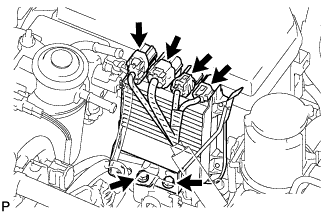
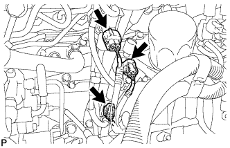
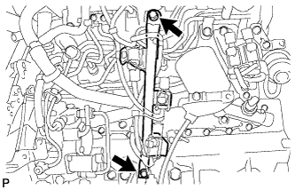
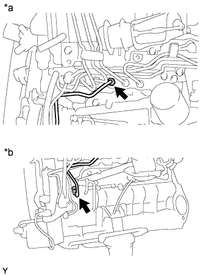
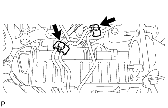
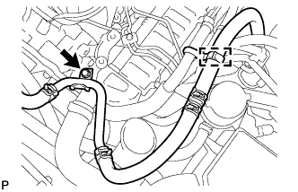
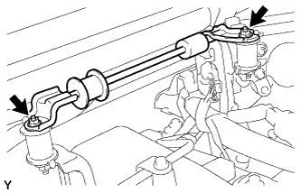
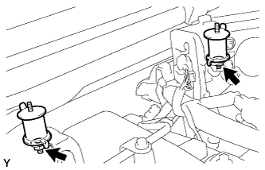
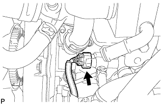

КЛАПАН РОГ (для моделей с DPF) > СНЯТИЕ |
| 1. ОТСОЕДИНИТЕ ПРОВОД ОТ ОТРИЦАТЕЛЬНОГО ВЫВОДА АККУМУЛЯТОРНОЙ БАТАРЕИ |
| 2. СНИМИТЕ КОРПУС ДРОССЕЛЬНОЙ ЗАСЛОНКИ ДИЗЕЛЬНОГО ДВИГАТЕЛЯ В СБОРЕ |
| 3. СНИМИТЕ ВЕРХНЕЕ УПЛОТНЕНИЕ КРОНШТЕЙНА РАДИАТОРА |
Освободите 13 фиксаторов и снимите верхнее уплотнение кронштейна радиатора.
| 4. СНИМИТЕ НИЖНЮЮ ОБЛИЦОВКУ ПЕРЕДНЕГО БАМПЕРА |
Освободите фиксатор, выверните 5 болтов и снимите нижнюю накладку переднего бампера.
| 5. СНИМИТЕ ЗАЩИТУ КАРТЕРА ДВИГАТЕЛЯ № 1 В СБОРЕ |
Выверните 4 болта и снимите защиту картера двигателя № 1.
| 6. СЛЕЙТЕ ОХЛАЖДАЮЩУЮ ЖИДКОСТЬ ДВИГАТЕЛЯ |
Ослабьте пробку сливного крана радиатора.
 |
Слейте охлаждающую жидкость, сняв пробку расширительного бачка, а затем с помощью ключа снимите вентиляционную пробку.
Ослабьте пробку сливного крана блока цилиндров.
| *1 | Бачок радиатора | *2 | Вентиляционная пробка |
| *3 | Пробка сливного крана радиатора | *4 | Пробка сливного крана блока цилиндров |
| 7. СНИМИТЕ ЛЕВОЕ ПЕРЕДНЕЕ КОЛЕСО |
| 8. СНИМИТЕ УПЛОТНЕНИЕ ФАРТУКА ЛЕВОГО ПЕРЕДНЕГО КРЫЛА |
Снимите 5 фиксаторов и уплотнение фартука левого переднего крыла.
| 9. СНИМИТЕ ЭЛЕКТРОННЫЙ БЛОК ПРИВОДА ФОРСУНОК В СБОРЕ |
|  |
Отсоедините 4 разъема.
Выверните 2 болта и снимите электронный блок привода форсунок в сборе.
| 10. ОТСОЕДИНИТЕ МАСЛЯНЫЙ БАЧОК ЛОПАСТНОГО НАСОСА В СБОРЕ |
 |
Выверните 3 болта и отсоедините масляный бачок лопастного насоса.
| 11. СНИМИТЕ ОПОРУ КОЛЛЕКТОРА С ЭЛЕКТРОВАКУУМНЫМ КЛАПАНОМ |
|  |
Отсоедините 3 разъема электровакуумного клапана.
 |
Отсоедините вакуумный шланг № 1.
 |
Отсоедините 2 вакуумных шланга № 2 от клапана РОГ № 2.
 |
Отсоедините вакуумные шланги № 1 и № 4.
|  |
Выверните 2 болта и снимите опору коллектора с электровакуумным клапаном.
| 12. СНИМИТЕ ТРУБКУ ПОДВОДА ТОПЛИВА |
 |
Выверните болт и снимите зажим топливной трубки высокого давления № 2.
|  |
С помощью разрезной головки на 17 мм ослабьте гайки штуцеров и снимите трубку подвода топлива.
| *a | Со стороны топливной системы Common Rail |
| *b | Сторона нагнетающего топливного насоса |
| 13. СНИМИТЕ ТОПЛИВНЫЕ ТРУБКИ ВЫСОКОГО ДАВЛЕНИЯ № 1, № 2 И № 3 В СБОРЕ |
 |
Отверните 2 гайки и снимите зажим топливной трубки высокого давления № 3.
|  |
Выверните 2 болта и снимите 2 зажима топливной трубки высокого давления № 2.
 |
С помощью разрезной головки на 17 мм ослабьте гайки штуцеров и снимите топливные трубки высокого давления № 1, № 2 и № 3.
| *a | Со стороны форсунки |
| *b | Со стороны топливной системы Common Rail |
| 14. ОТСОЕДИНИТЕ ПАТРУБОК ОХЛАЖДАЮЩЕЙ ЖИДКОСТИ ПОДОГРЕВАТЕЛЯ В СБОРЕ |
|  |
Освободите хомут перепускного шланга охлаждающей жидкости.
Выверните болт и отсоедините патрубок отопителя.
| 15. ОТСОЕДИНИТЕ ПЕРЕПУСКНОЙ ШЛАНГ ОХЛАЖДАЮЩЕЙ ЖИДКОСТИ |
Освободите 4 хомута перепускного шланга охлаждающей жидкости.
Отсоедините перепускной шланг охлаждающей жидкости № 7, обозначенный символом A на рисунке.
Отсоедините перепускной шланг охлаждающей жидкости № 4, обозначенный символом B на рисунке.
Отсоедините перепускной шланг охлаждающей жидкости № 3, обозначенный символом C на рисунке.
Отсоедините перепускной шланг охлаждающей жидкости № 8, обозначенный символом D на рисунке.
Отсоедините перепускной шланг охлаждающей жидкости № 6, обозначенный символом E на рисунке.
Отсоедините перепускной шланг охлаждающей жидкости № 5, обозначенный символом F на рисунке.
| 16. СНИМИТЕ ВАКУУМНУЮ ТРУБКУ № 1 В СБОРЕ |
 |
Отсоедините вакуумный шланг от впускного коллектора.
Выверните болт и отсоедините вакуумную трубку № 1.
| 17. СНИМИТЕ КРОНШТЕЙН ЗАЖИМА ЖГУТА ПРОВОДОВ |
Отсоедините разъем свечи накаливания.
 |
Освободите 2 зажима жгута проводов и отсоедините разъем свечи накаливания от кронштейна зажима жгута проводов.
 |
Выверните болт и снимите кронштейн зажима жгута проводов.
| 18. СНИМИТЕ КРОНШТЕЙН КРЫШКИ ДВИГАТЕЛЯ № 3 |
|  |
Отверните 2 гайки и снимите кронштейн крышки двигателя № 3.
| 19. СНИМИТЕ ИЗОЛЯТОР КРОНШТЕЙНА КРЫШКИ ДВИГАТЕЛЯ |
|  |
Отверните 2 гайки и снимите 2 изолятора кронштейнов крышки двигателя.
| 20. СНИМИТЕ КРОНШТЕЙН КРЫШКИ ДВИГАТЕЛЯ № 4 |
 |
Выверните болт и снимите кронштейн крышки двигателя № 4.
| 21. СНИМИТЕ ОПОРУ ПАТРУБКА ПОДАЧИ ВОЗДУХА |
 |
Отсоедините 4 разъема форсунок и освободите 3 зажима жгута проводов.
 |
Выверните болт A и отсоедините топливопровод № 1 от опоры патрубка подачи воздуха.
| *1 | Топливопровод № 1 |
Выверните 3 болта и снимите опору патрубка подачи воздуха.
| 22. СНИМИТЕ ОХЛАДИТЕЛЬ РОГ С КЛАПАНОМ РОГ № 2 В СБОРЕ |
|  |
Отсоедините разъем датчика давления топлива от топливной системы Common Rail.
Отверните 4 гайки, выверните 3 болта и снимите охладитель РОГ с клапаном РОГ № 2.
Снимите 2 прокладки с головки блока цилиндров и электрического клапана управления РОГ.
| *1 | Прокладка | - | - |
| 23. СНИМИТЕ ЭЛЕКТРИЧЕСКИЙ КЛАПАН УПРАВЛЕНИЯ РОГ В СБОРЕ |
Отсоедините разъем электрического клапана управления РОГ.
 |
Снимите электрический клапан управления РОГ и прокладку с патрубка подачи воздуха.
| *1 | Патрубок подачи воздуха |